Программа PuTTY настроена для подключения к серверу kubsu-dev.ru на нестандартный порт 58528. Тип соединения — SSH.
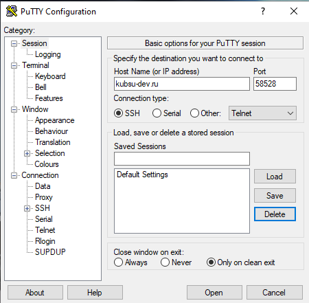
После ввода логина u82358 и пароля получено приветствие Ubuntu и командная строка.
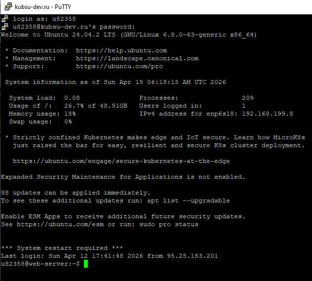
Утилита ping отправляет ICMP-запросы. В первой строке вывода указан IP-адрес сервера 185.13.84.92. Все 7 пакетов доставлены, потерь нет.
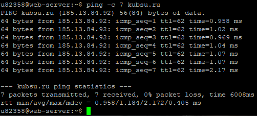
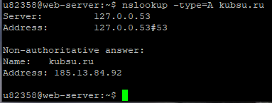
Почтовые серверы с приоритетами:
mx2.kubannet.rumx.kubannet.rumx.kubsu.ru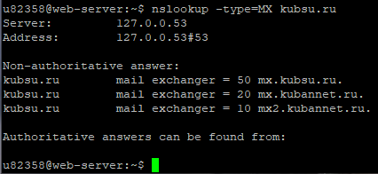
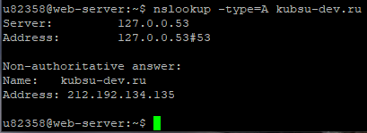
Домен не имеет собственных почтовых серверов (ответ No answer). Авторитативные DNS-серверы: nsl.nameself.com, support.regtime.net.
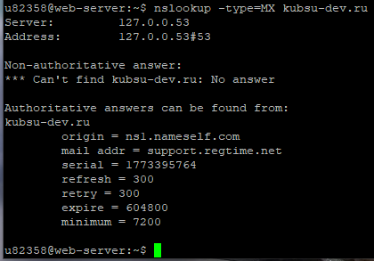
Дата регистрации: 1998-03-28T12:18:30Z (28 марта 1998 года).
Срок действия оплачен до 30 апреля 2026 года.
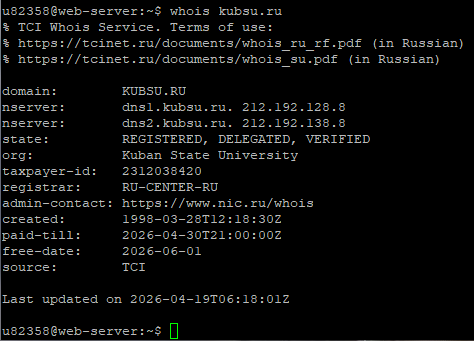
Дата регистрации: 2020-02-12T15:55:06Z (12 февраля 2020 года).
Срок действия оплачен до 12 февраля 2027 года.
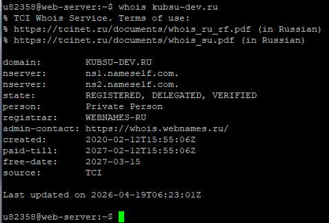
web1 собраны все скриншоты, index.html и style.css.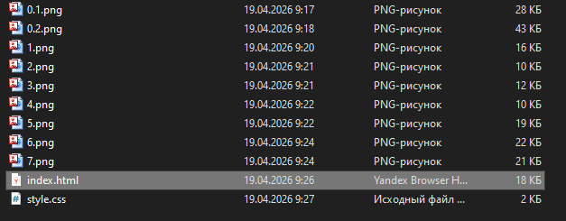
git init git add . git commit -m "first commit" git branch -M main git remote add origin https://github.com/Valeria1445/web1.git git push -u origin main
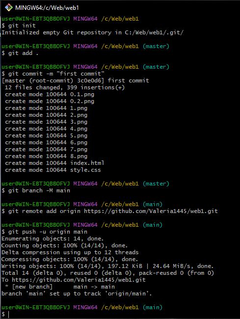
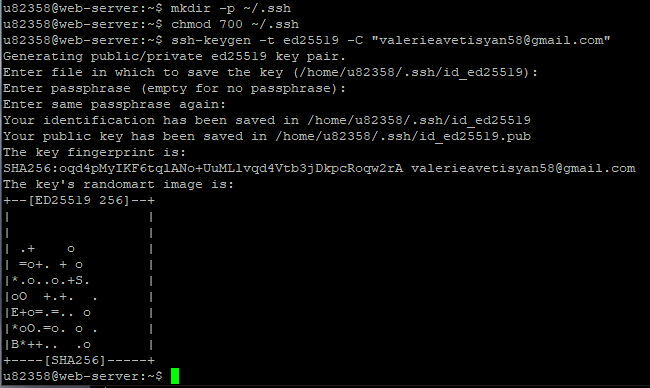
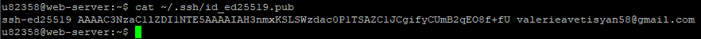
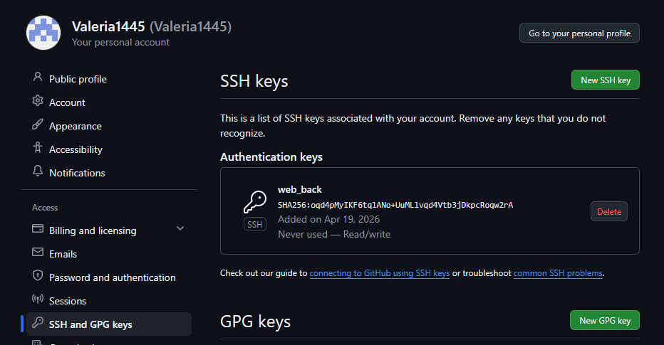
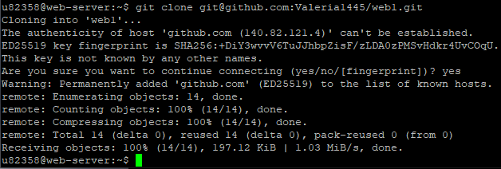
mkdir -p ~/www/w1 cp -r ~/web1/* ~/www/w1/ ls ~/www/w1/
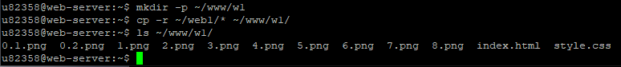
http://u82358.kubsu-dev.ru/w1/index.html (проверено визуально).kubsu-dev.ru, порт 58528, логин u82358.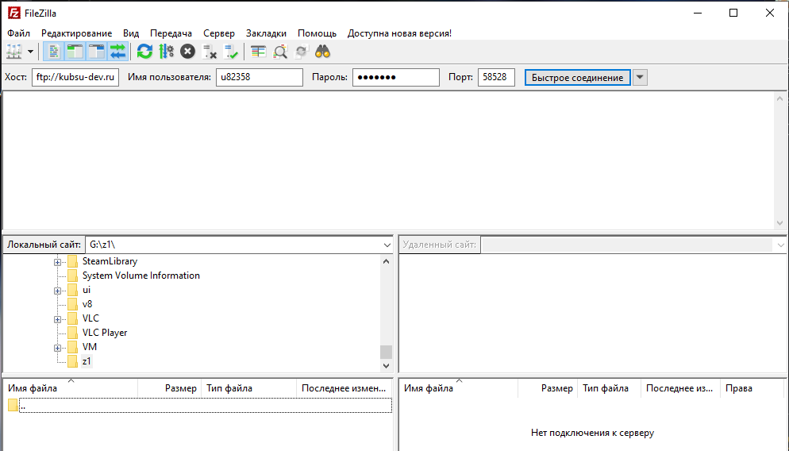
/home/u82358.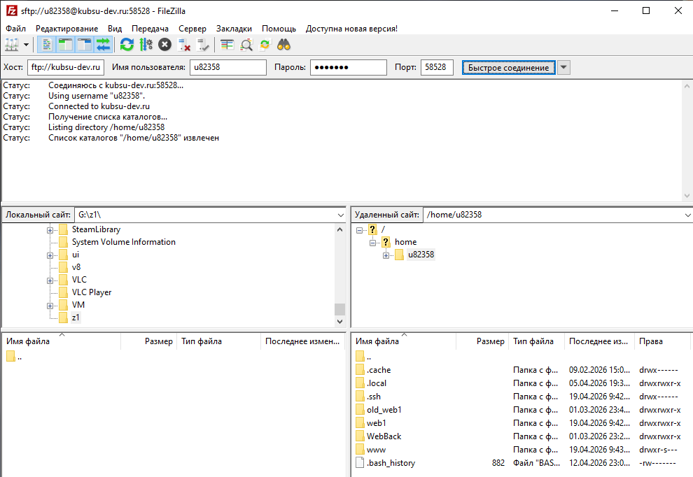
/home/u82358/www/w1, видны все файлы.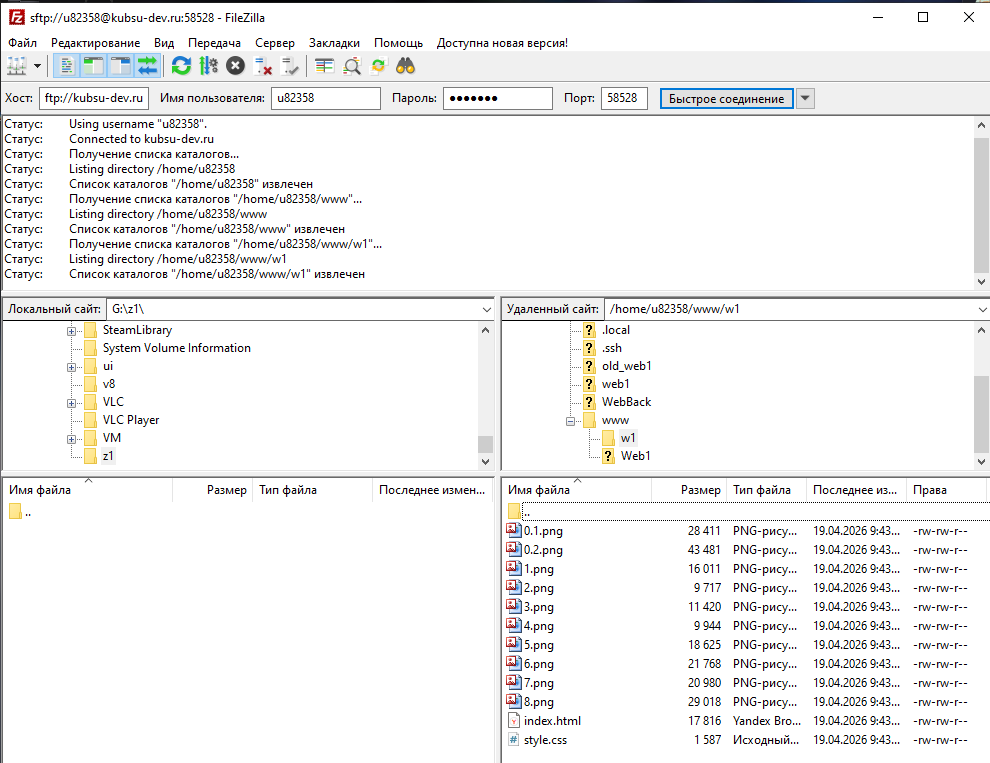
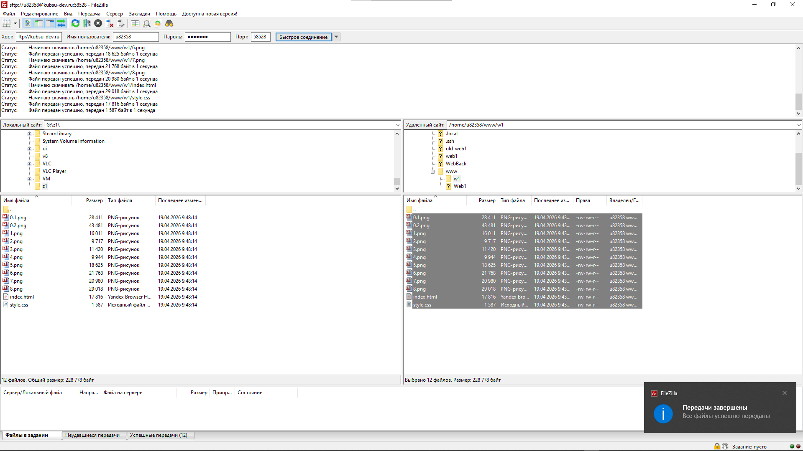
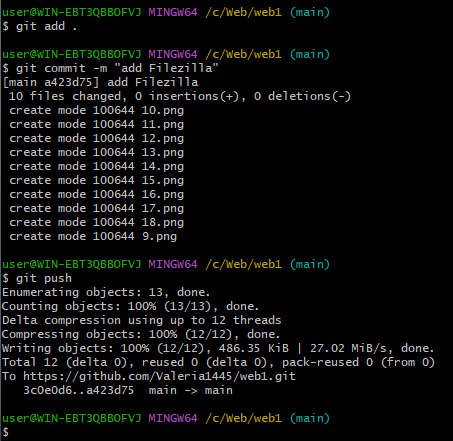
git pull и повторное копирование в ~/www/w1.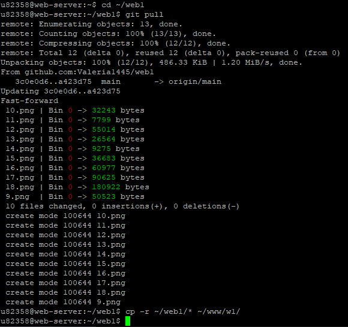